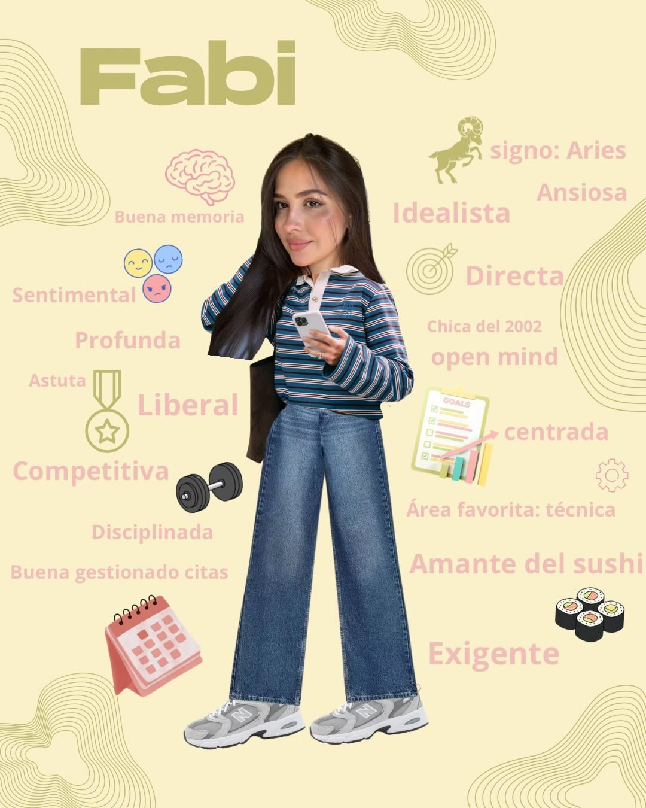
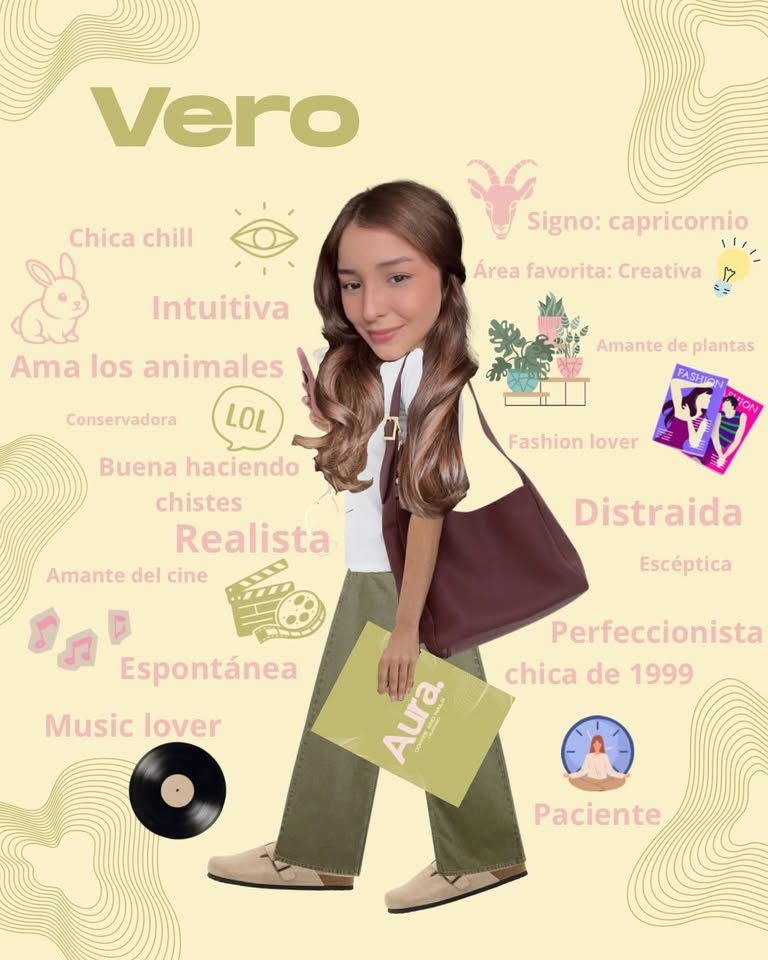

Bienvenidos a nuestro espacio, un lugar diferente en Burgos donde la belleza y el café se unen para crear una experiencia única.
Este proyecto nace de la ilusión de Vero y Fabi, familia dentro y fuera del negocio, y de las ganas de juntar dos cosas que siempre nos han apasionado: el cuidado personal y esos pequeños momentos que se disfrutan alrededor de una buena taza de café.
Queríamos crear algo más que un salón de uñas o una cafetería. Soñábamos con un espacio acogedor, bonito y cercano, donde cada persona pudiera venir a relajarse, desconectar de la rutina y dedicarse un rato para sí misma. Un lugar donde sentirse cómoda, compartir, cuidarse y disfrutar sin prisas.
Cada detalle de este rincón está pensado con muchísimo cariño para que te sientas como en casa. Porque para nosotras, lo más importante no es solo ofrecer un servicio, sino crear una experiencia especial y un ambiente lleno de buena energía.
Gracias por acompañarnos en esta aventura y formar parte de este sueño hecho realidad ✦